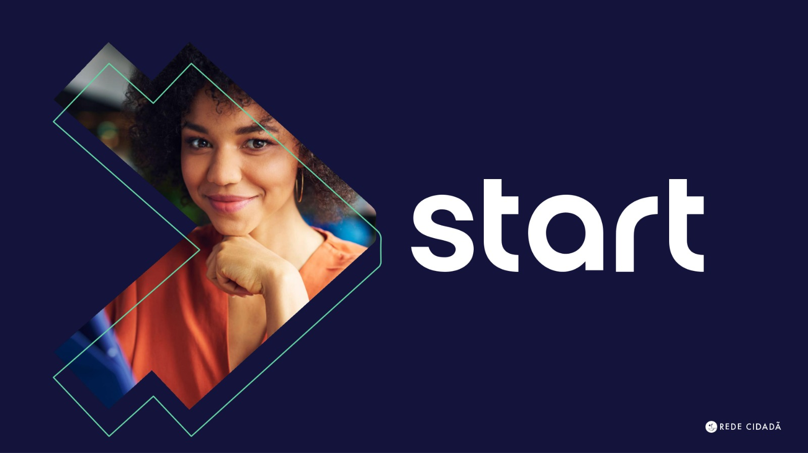
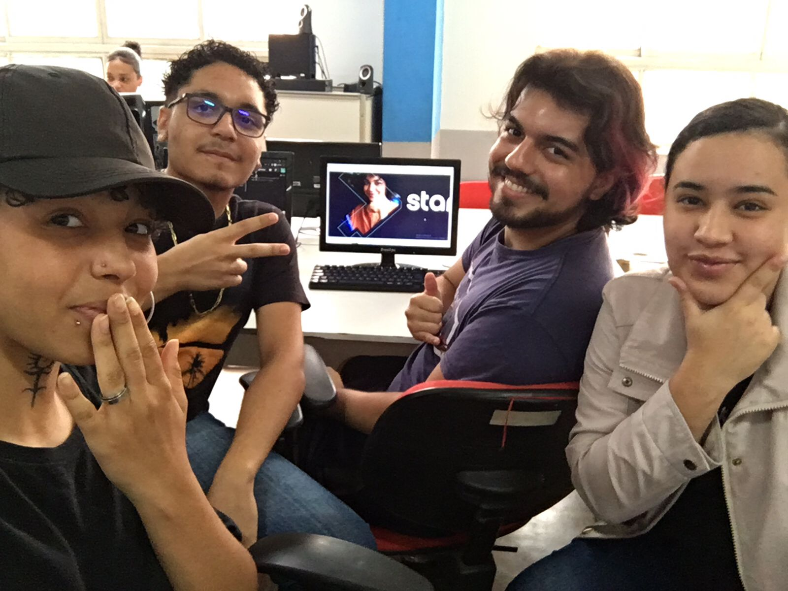

Projeto Start
Criando sonhos

Tecnologia > Inovações
Saiba tudo sobre o Curso
realizado pela Rede Cidadã
Criado em 30/11/2023
O que é
O curso "START" da Rede Cidadã em parceria com a Accenture é voltado para jovens adultos e foca no desenvolvimento de habilidades em tecnologia da informação. Ele oferece uma oportunidade de capacitação prática em áreas como programação, análise de dados e outras competências relevantes no campo da TI. Essa iniciativa visa preparar os participantes para o mercado de trabalho, fornecendo conhecimentos específicos e práticos que são demandados na indústria de tecnologia.

Data de lançamento
2022
Como funciona
O curso "START" da Rede Cidadã, em parceria com a Accenture, geralmente funciona da seguinte maneira:
- Inscrição:
Os interessados se inscrevem para participar do programa, podendo envolver por meio de WhatsApp e ida até a instituição.
- Capacitação:
Os participantes selecionados passam por um programa de capacitação em tecnologia da informação, abrangendo teoria, prática e projetos.
- Projetos Práticos:
Os participantes têm a oportunidade de aplicar seus conhecimentos em projetos práticos, obtendo experiência hands-on.
- Networking:
Eventos podem ser organizados para conectar os participantes a profissionais da indústria, proporcionando oportunidades de aprendizado e crescimento profissional.
- Certificação:
Ao concluir com sucesso o programa, os participantes podem receber certificados, agregando valor às suas futuras oportunidades de emprego.